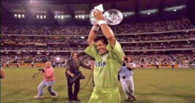
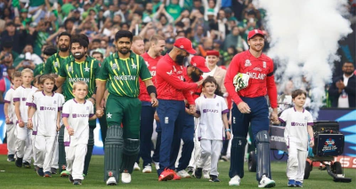
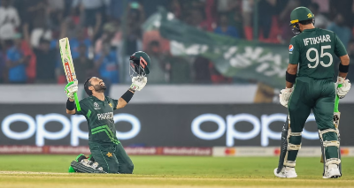
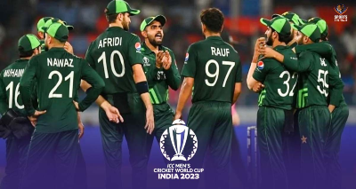
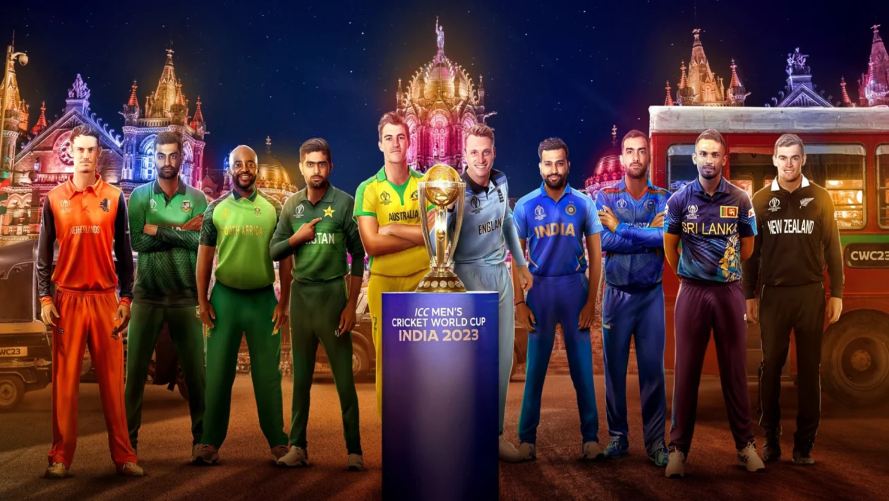

La Copa Mundial de Cricket es el torneo más prestigioso del deporte, celebrado cada cuatro años bajo la dirección del Consejo Internacional de Cricket (ICC). Este evento reúne a los mejores equipos de cricket del mundo para competir por el codiciado título de campeón mundial. La Copa Mundial sigue un emocionante formato que incluye una fase inicial de grupos, seguida de rondas eliminatorias que culminan en una gran final. Equipos de potencias tradicionales como India, Australia, Inglaterra y Pakistán, junto con equipos de naciones como Bangladesh, Sri Lanka y Afganistán, participan en esta competición. La Copa Mundial de Cricket no solo es un evento deportivo de gran magnitud, sino también una celebración global que une a personas de diferentes culturas y nacionalidades en torno a su amor compartido por el juego del cricket.
Calificación y selección de equipos: Los equipos nacionales de cricket compiten en una serie de torneos de clasificación regionales para asegurar un lugar en el torneo principal. Los equipos principales, como India, Australia, Inglaterra, Sudáfrica, etc., generalmente tienen una entrada directa al torneo debido a su posición en el ranking de la ICC.
Formato del torneo: El formato puede variar en diferentes ediciones del torneo, pero generalmente involucra una fase de grupos seguida de eliminatorias. En la fase de grupos, los equipos se dividen en grupos y juegan partidos de todos contra todos. Los mejores equipos de cada grupo avanzan a la etapa eliminatoria, que incluye cuartos de final, semifinales y la final.
Sedes y organización: La ICC selecciona un país anfitrión o una serie de países anfitriones para albergar el torneo. Estos países suelen tener una infraestructura adecuada para organizar partidos de cricket a nivel internacional, incluidos estadios con capacidad para una gran cantidad de espectadores.
Promoción y cobertura mediática: El torneo se promociona a nivel mundial para atraer tanto a aficionados al cricket como a audiencias más amplias. La cobertura mediática incluye transmisiones televisivas, cobertura en línea, redes sociales, etc.
    